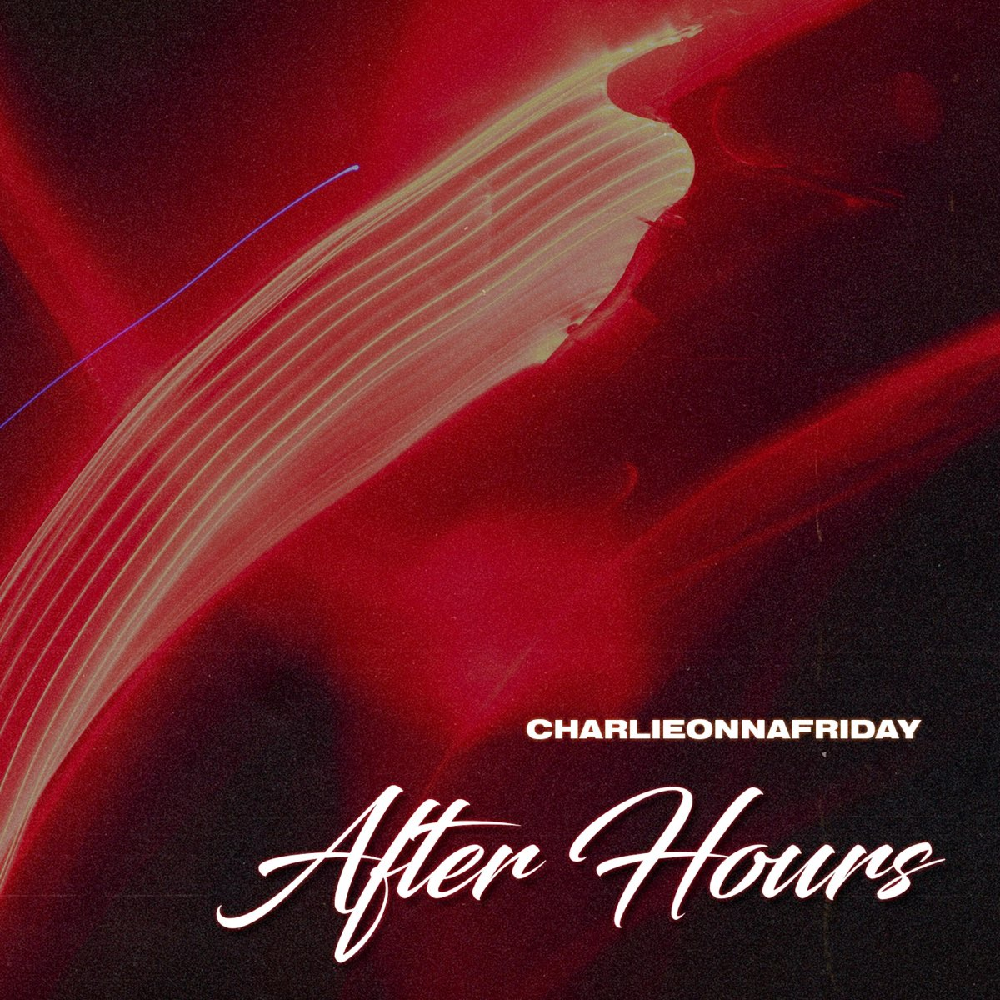
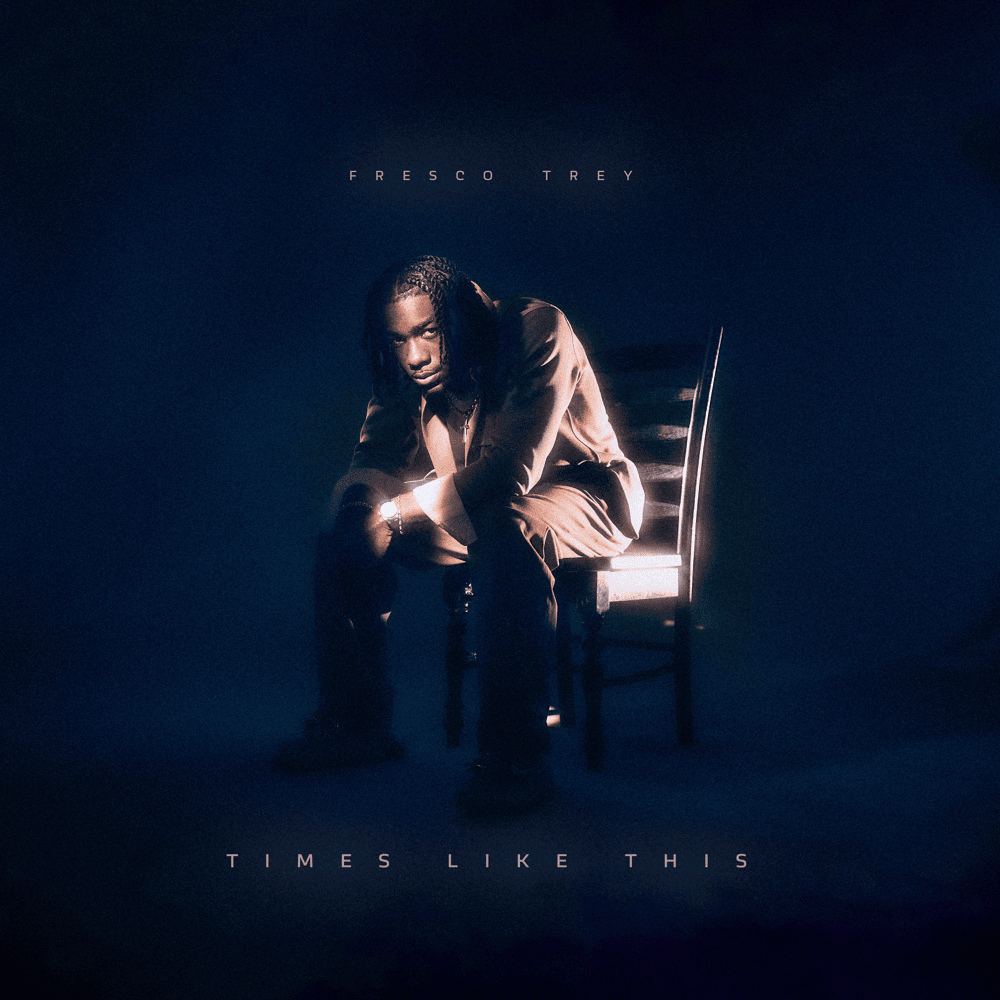

After Hours
charlieonnafriday
Building records with feeling, energy, and a sound of their own. Selected work, front and center.
Press play. Let it speak.


Tristan Nealis is a producer focused on creating music that connects—whether it hits late at night, rides with you, or stays with you after the song ends.
For production, collaborations, and inquiries.